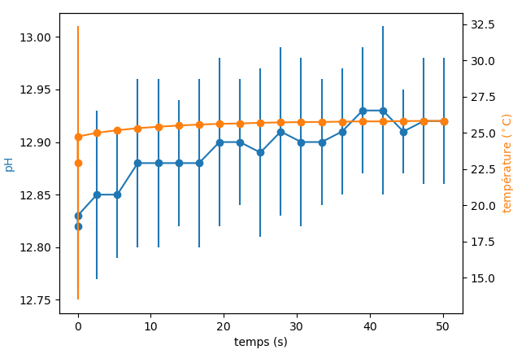

Représentation graphique des données
Avertissement
Que ce soit à l’issue de votre prise de vos Mesures du pH ou pour des données plus anciennes, lorsque ce vous souhaitez enregistrer votre figure, ne fermer la fenêtre affichée par le programme la contenant qu’une fois avoir sélectionné l’option d’enregistrement:
Sauver (O/N) ?
-> O
Sinon vous n’enregistrerez qu’une page blanche.
Ce programme permet de représenter et d’enregistrer graphiquement les mesures
effectuées juste à l’instant ou lors de prises de mesures plus anciennes.
Selectionnez pour cela l’option 3 - Représenter graphiquement dans le MENU PRINCIPAL.
Le programme vous affichera la liste des données de mesures disponibles dans le dossier DATA:
===========================================================================
MENU PRINCIPAL
===========================================================================
Que souhaitez-vous faire ?
1 - Calibrer
2 - Mesurer
3 - Représenter graphiquement
4 - Quitter
===========================================================================
?
-> 3
fichiers disponibles:
0 - ./DATA/fichier_mesure Thu Jun 6 12_58_56 2024.csv
1 - ./DATA/fichier_mesure Thu Jun 6 12_03_47 2024.csv
2 - ./DATA/fichier_mesure Thu Jun 6 12_52_02 2024.csv
3 - ./DATA/fichier_mesure Thu Jun 6 12_04_58 2024.csv
4 - ./DATA/fichier_mesure Thu Jun 6 12_14_54 2024.csv
5 - ./DATA/fichier_mesure Fri Jun 28 11_19_49 2024.csv
6 - ./DATA/fichier_mesure Fri Jun 28 11_27_36 2024.csv
7 - ./DATA/fichier_mesure Thu Jun 6 12_46_56 2024.csv
8 - ./DATA/fichier_mesure Fri Jun 28 11_21_37 2024.csv
...
Il suffit alors de renseigner le numéro d’ordre des données que vous souhaitez utiliser et valider avec la touche Entrée.
Le graphique de vos données va s’afficher. Le programme va alors vous demander:
Sauver (O/N) ?
Il est possible si vous le souhaitez d’enregistrer le graphique obtenu dans le dossier FIGURES, il vous suffit alors de répondre avec les touches
O, o, Y ou y.
Le fichier sera alors enregistré au format pdf dans le dossier FIGURES.